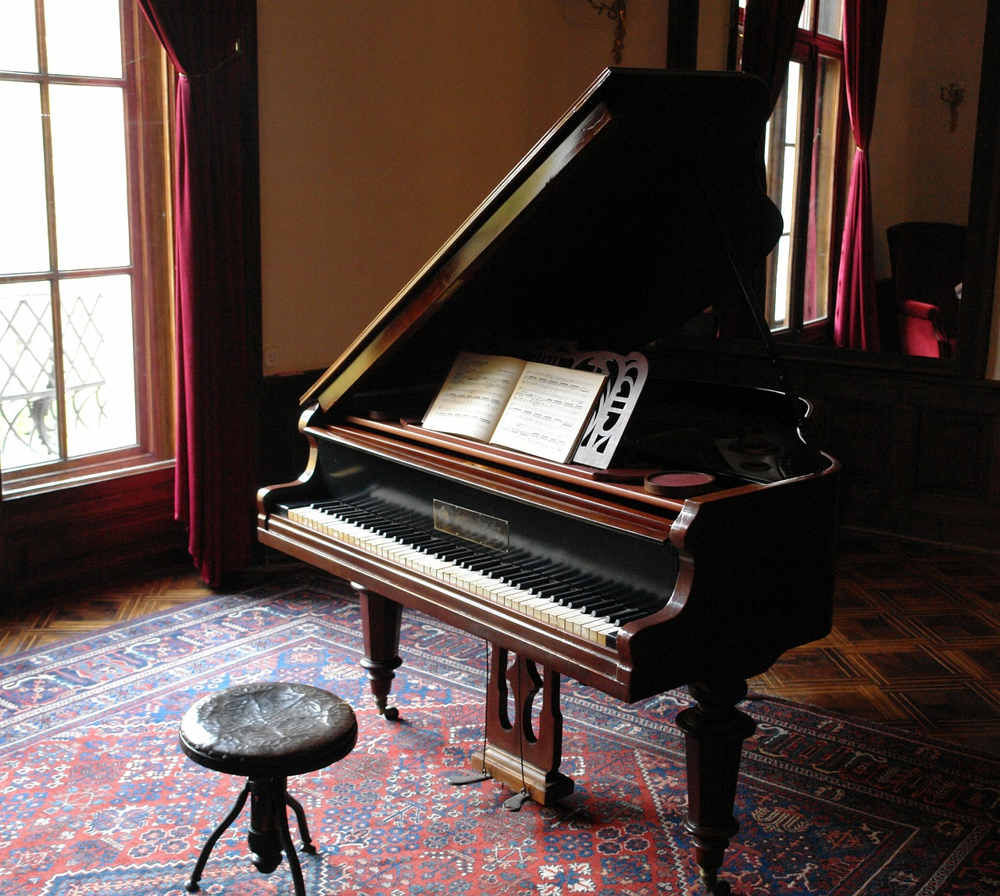

Bienvenido a Instrumentos Musicales
Guitarras
Las guitarras son instrumentos de cuerda muy versátiles.

Guitarra Acústica
Ideal para tocar en acústico.
Pianos
Los pianos son instrumentos de teclado clásicos.

Piano de Cola
Perfecto para conciertos y recitales.
Baterías
Las baterías son el corazón de muchas bandas.

Batería Electrónica
Ideal para practicar sin molestar.
Instrumentos Destacados
Guitarra Eléctrica
Con un sonido poderoso y versatilidad.
Clavicémbalo
Instrumento de teclado barroco.
Bajo Eléctrico
Base rítmica para muchas bandas.
Colores de Instrumentos
Estos colores representan diferentes tipos de instrumentos:
Color de Guitarra: Azul
Color de Piano: Negro
Color de Batería: Rojo
Más Instrumentos Musicales
Arpa
Tuba
Clarinete
Violín
Saxofón